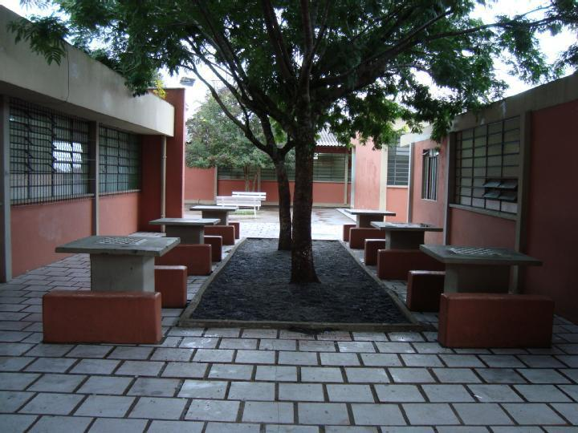

O Colegio Estadual Humberto de Alencar Castelo Branco é um espaço de ensino e aprendizado para fundamental, ensino medio e profissionalizante, nosso objetivo é dar a oportunidade e a esperança de estudos para aqueles que não a tiveram, aplicando o necessario para a pessoa poder viver em sociedade e atuar no mercado de trabalho desejado.
Nos oferecemos diversas oportunidades para a carreira, como por exemplo:
Comparecer a uma escola ajuda o individio a crescer e evoluir tanto socialmente quanto profissionalmente, nela, os alunos tem a oportunidade de interagir com outro estudantes, consumir conteudo escolar para melhorar o aprendizado ou participar de atividades complementares. Assim, pode tanto aprender quanto se manter distraido.
| Setor | Serviço | Horario |
|---|---|---|
| Pedagogia | Atendimento estudantil | 10:30 a 12:25 |
| Secretaria | Atendimento de pais e responsaveis | 8:30 a 12:00 |
| Momento Aprendizado | Estudos e sala de aula | 7:00 a 12:25 |
| Manutenção | Organização Escolar | 6:00 a 13:30 |
